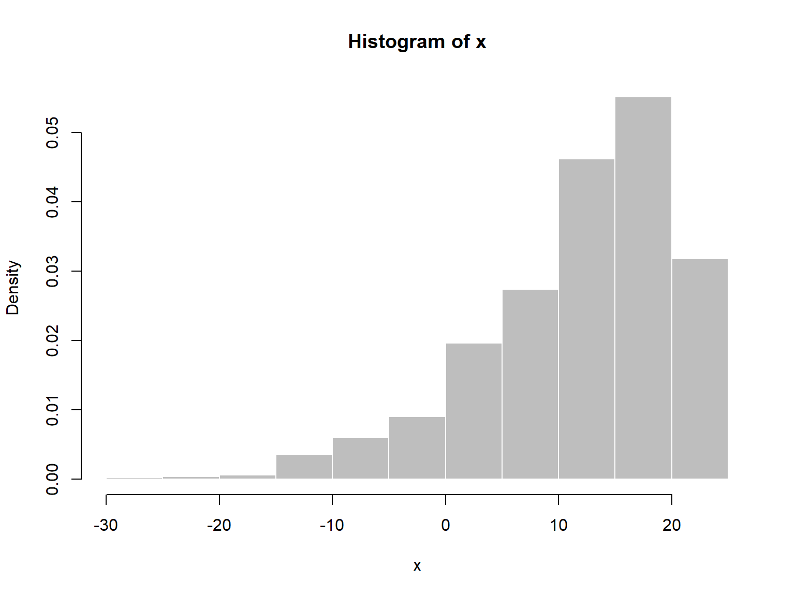
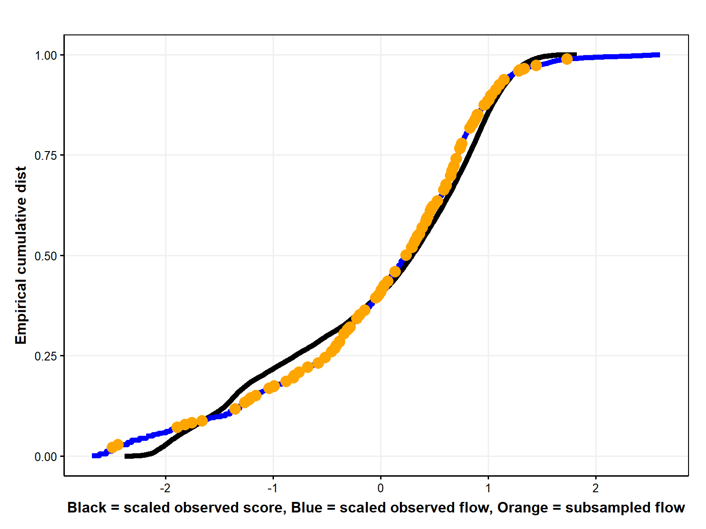
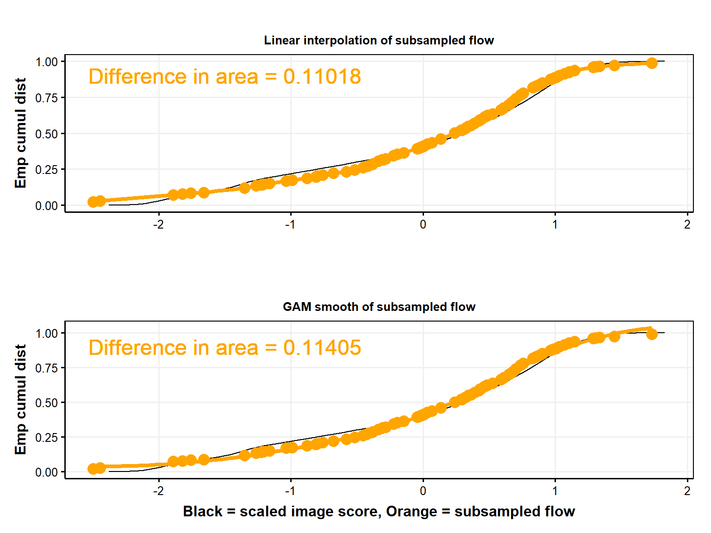
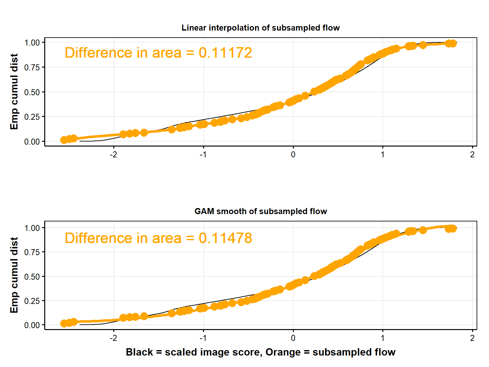
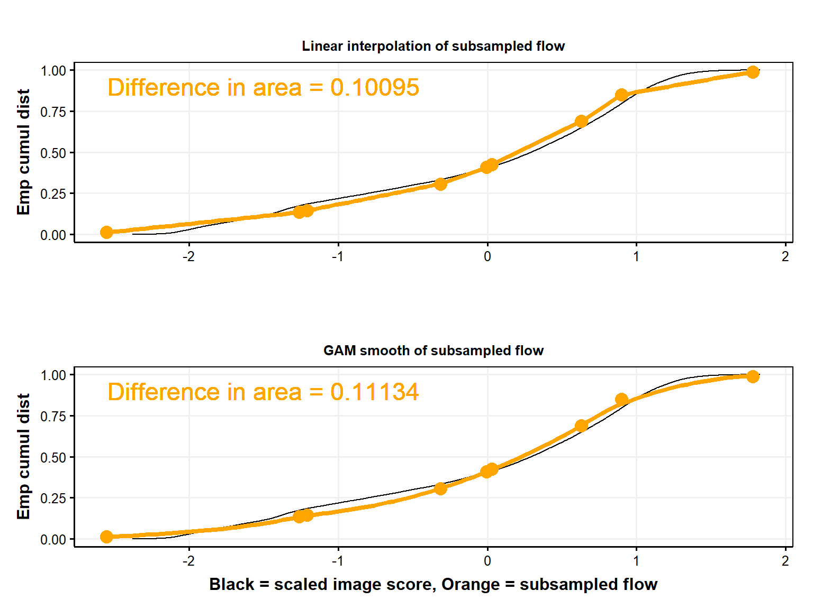
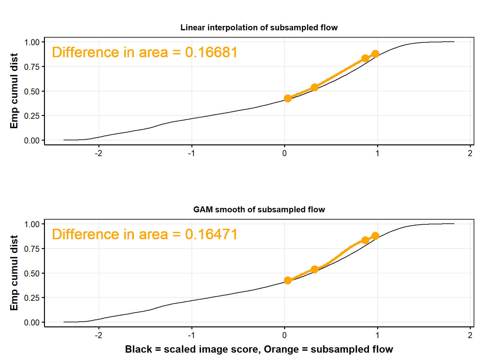
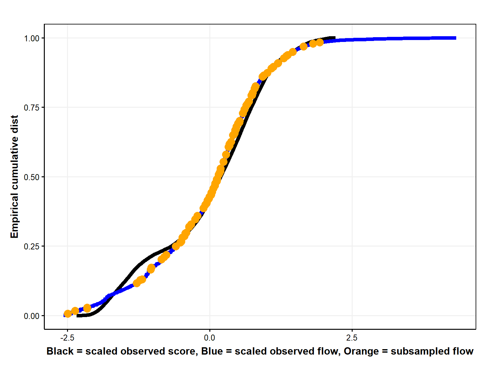
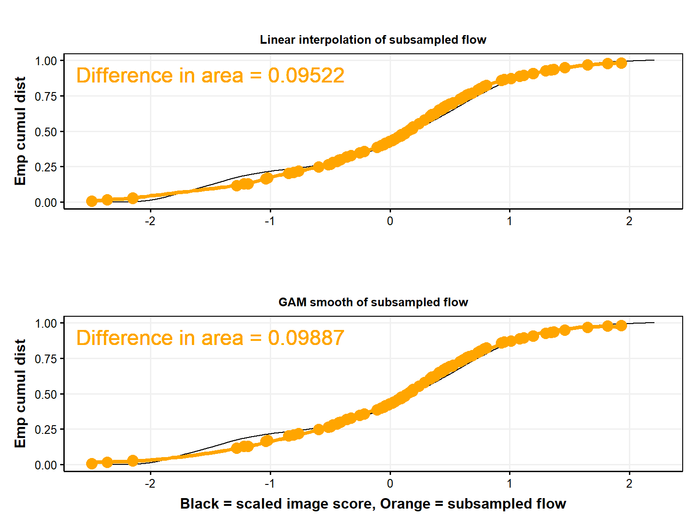
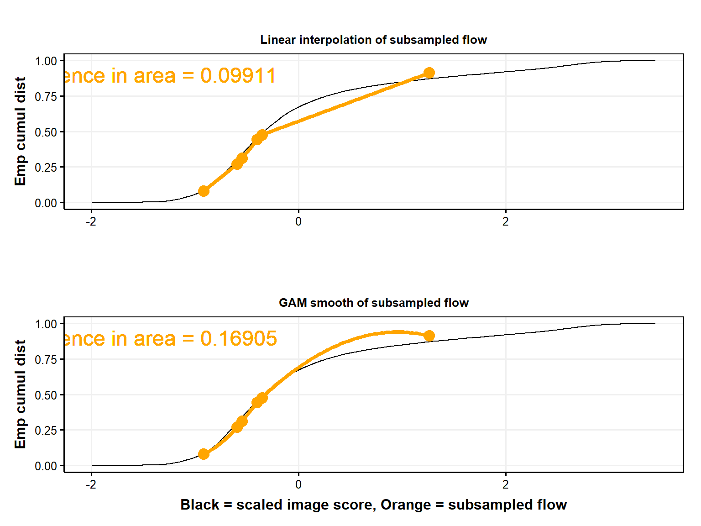

Code
library(FAdist)
library(fitdistrplus)
library(getPrepareWBData)
library(ggpubr)
library(moments)
library(lmomco)
library(MASS)
library(tidyverse)library(FAdist)
library(fitdistrplus)
library(getPrepareWBData)
library(ggpubr)
library(moments)
library(lmomco)
library(MASS)
library(tidyverse)getECDF <- function(d) {
fn <- ecdf(d)
fn(d)
}
estimate_kappa_params <- function(data) {
mu <- mean(data, na.rm = TRUE)
sigma <- sd(data, na.rm = TRUE)
skewness <- skewness(data, na.rm = TRUE)
kurtosis <- kurtosis(data, na.rm = TRUE)
kappa_params <- c(mu, sigma, skewness, kurtosis)
#kappa_params <- c(skewness, kurtosis, sigma, mu)
return(kappa_params)
}
# Function to standardize data using the 4-parameter kappa distribution without ECDF
standardize_data_kappa <- function(data) {
kappa_params <- estimate_kappa_params(data)
standardized_values <- pkappa4(data, kappa_params[1], kappa_params[2],
kappa_params[3], kappa_params[4])
return(standardized_values)
}
#fitdistr(dWB0$flow_cfs_log10, "kappa4")
pkappa4_ben <- function (q, shape1, shape2, scale = 1, location = 0, lower.tail = TRUE, log.p = FALSE) {
Fx <- (1 - shape2 * (1 - shape1/scale * (q - location))^(1/shape1))^(1/shape2)
if (!lower.tail)
Fx <- 1 - Fx
if (log.p)
Fx <- log(Fx)
return(Fx)
}d <- read.csv('./data/in/concatenated_predictions.csv') |>
mutate(flow_cfs_log10 = log10(flow_cfs))
#Get ECDF for each station
#
dG <- d |>
filter(!is.na(flow_cfs_log10)) |>
group_by(station_name) |>
mutate(
flow_cfs_log10_ecdf = getECDF(flow_cfs_log10),
flow_cfs_log10_scaled = scale(flow_cfs_log10),
flow_cfs_log10_scaled_ecdf = getECDF(flow_cfs_log10_scaled),
#flow_cfs_log10_scaled_kappa = standardize_data_kappa(flow_cfs_log10),
#flow_cfs_log10_scaled_kappa_ecdf = getECDF(flow_cfs_log10_scaled_kappa),
score_scaled = scale(score),
score_scaled_ecdf = getECDF(score_scaled),
score_scaled_kappa = standardize_data_kappa(score)
# score_scaled_kappa_ecdf = getECDF(score_scaled_kappa)
) |>
ungroup()
# tmp=d |>
# filter(!is.na(flow_cfs_log10), station_name == "01359135_Patroon Creek") |>
# group_by(station_name) |>
# mutate(
# flow_cfs_log10_ecdf = getECDF(flow_cfs_log10),
#
# flow_cfs_log10_scaled = scale(flow_cfs_log10),
# flow_cfs_log10_scaled_ecdf = getECDF(flow_cfs_log10_scaled),
#
# flow_cfs_log10_scaled_kappa = scale_kappa(flow_cfs_log10),
# # flow_cfs_log10_scaled_kappa_ecdf = getECDF(flow_cfs_log10_scaled_kappa),
#
# score_scaled = scale(score),
# score_scaled_ecdf = getECDF(score_scaled),
#
# score_scaled_kappa = scale_kappa(score),
# score_scaled_kappa_ecdf = getECDF(score_scaled_kappa)
# ) |>
# ungroup()
d <- d |>
left_join(dG) |>
filter(
!is.na(flow_cfs_log10)
)
dWB0 <- d |>
filter(
station_name %in% "West Brook 0_01171100"
)Logistic is blue line and gam is green line. Regressions are across data_group. Grouped by site.
ggplot(d |> filter(!is.na(flow_cfs_log10)), aes(flow_cfs_log10, rank_pred)) +
geom_point(aes(color = data_group), alpha = 0.025) +
guides(color = guide_legend(override.aes = list(alpha = 1))) +
#geom_smooth(method = "glm", method.args= list(family="binomial"), se = FALSE) +
#geom_smooth(color = "darkgreen", se = FALSE) +
labs(y = "Predicted percentile", x = "Observed flow (log10(cfs)") +
theme_publication() +
facet_wrap(~station_name, scales = "free")
Pick sites that seem to have enough data to get predictions
stationsToUse <- c(12, 29, 65, 80)
d2 <- d |>
filter(
!is.na(flow_cfs_log10),
station_id %in% stationsToUse
)
ggplot(d2, aes(flow_cfs_log10, rank_pred)) +
geom_point(aes(color = data_group), alpha = 0.1) +
guides(color = guide_legend(override.aes = list(alpha = 1))) +
geom_smooth(method = "glm", method.args= list(family="binomial"), se = FALSE) +
geom_smooth(color = "darkgreen", se = FALSE) +
labs(y = "Predicted percentile", x = "Observed flow (log10(cfs)") +
theme_publication() +
facet_wrap(~station_name, scales = "free")
ggplot(d2, aes(scale(flow_cfs_log10), scale(score))) +
geom_point(aes(color = data_group), alpha = 0.1) +
guides(color = guide_legend(override.aes = list(alpha = 1))) +
# geom_smooth(method = "glm", method.args= list(family="binomial"), se = FALSE) +
geom_smooth(color = "darkgreen", se = FALSE) +
labs(y = "Score, scaled", x = "Observed flow (log10(cfs), scaled") +
theme_publication() +
facet_wrap(~station_name, scales = "free")
write.csv(d2, "./data/out/forObservable/d2.csv")Fair amount of variation among stations
ggplot(d, aes(flow_cfs_log10_scaled, flow_cfs_log10_scaled_ecdf)) +
geom_line(aes(color = station_name)) +
geom_smooth(method = "glm", method.args= list(family="binomial"), se = FALSE, color = "black") +
xlim(c(-3.5,3.5)) +
theme_publication()ggplot(d |> filter(!is.na(flow_cfs_log10_scaled)), aes(flow_cfs_log10_scaled, flow_cfs_log10_scaled_ecdf)) +
geom_line(aes(color = station_name)) +
#geom_smooth(method = "glm", method.args= list(family="binomial"), se = FALSE, color = "black") +
xlim(c(-3.5,3.5)) +
guides(color = guide_legend(override.aes = list(alpha = 1))) +
theme_publication() +
facet_wrap(~station_name)Fair amount of variation among stations
dummy=0
# ggplot(d, aes(flow_cfs_log10_scaled_kappa, flow_cfs_log10_scaled_kappa_ecdf)) +
# geom_line(aes(color = station_name)) +
# geom_smooth(method = "glm", method.args= list(family="binomial"), se = FALSE, color = "black") +
# xlim(c(-3.5,3.5)) +
# theme_publication()
#
# ggplot(d |> filter(!is.na(flow_cfs_log10_scaled_kappa)), aes(flow_cfs_log10_scaled, flow_cfs_log10_scaled_kappa_ecdf)) +
# geom_line(aes(color = station_name)) +
# #geom_smooth(method = "glm", method.args= list(family="binomial"), se = FALSE, color = "black") +
# xlim(c(-3.5,3.5)) +
# guides(color = guide_legend(override.aes = list(alpha = 1))) +
# theme_publication() +
# facet_wrap(~station_name)kappas <- estimate_kappa_params(dWB0$flow_cfs_log10)
# [1] -0.7751903 3.1289847 0.7443434 0.8989118
flow_kappa <- data.frame(
flow = dWB0$flow_cfs_log10,
x = pkappa4(
dWB0$flow_cfs_log10,
kappas[3],
kappas[4],
kappas[2],
kappas[1]
)
)
ggplot(flow_kappa, aes(flow)) +
geom_histogram() +
geom_histogram(aes(x), color = "orange")
hist(dWB0$flow_cfs_log10)#curve(dkappa4(dWB0$flow_cfs_log10, kappas[3], kappas[4],kappas[2],kappas[1]), add=TRUE, col='red4', lwd=2)
x<-rkappa4(1000,1,.2,12,10)
hist(x,freq=FALSE,col='gray',border='white')
curve(dkappa4(x,.1,.2,12,110),add=TRUE,col='red4',lwd=2)
#https://rdrr.io/cran/lmomco/man/parkap.html
lmr <- lmoms(dWB0$flow_cfs_log10)
parkap(lmr)$type
[1] "kap"
$para
xi alpha kappa h
0.81233110 0.73677738 0.58117525 -0.09269592
$source
[1] "parkap"
$support
lower upper
-Inf 2.080068
$message
[1] ""
$ifail
[1] 0
$ifailtext
[1] "Successful parameter estimation."#ojs_define(dWB0_OJS = transpose(dWB0))
ggplot(dWB0, aes(flow_cfs_log10_scaled, score_scaled)) +
geom_point(aes(color = data_group), alpha = 0.1) +
guides(color = guide_legend(override.aes = list(alpha = 1))) +
#geom_smooth(method = "glm", method.args= list(family="binomial"), se = FALSE) +
geom_smooth(color = "darkgreen", se = FALSE) +
labs(x = "Observed flow (log10(cfs))", y = "Score") +
theme_publication()ggplot(dWB0, aes(flow_cfs_log10_scaled, score_scaled)) +
geom_point(aes(color = data_group), alpha = 0.1) +
guides(color = guide_legend(override.aes = list(alpha = 1))) +
# geom_smooth(method = "glm", method.args= list(family="binomial"), se = FALSE) +
geom_smooth(color = "darkgreen", se = FALSE) +
labs(x = "Observed flow (log10(cfs)), scaled", y = "Score, scaled") +
theme_publication()
ggplot(dWB0, aes(rank_obs, rank_pred)) +
geom_point(aes(color = data_group), alpha = 0.1) +
guides(color = guide_legend(override.aes = list(alpha = 1))) +
# geom_smooth(method = "glm", method.args= list(family="binomial"), se = FALSE) +
geom_smooth(color = "darkgreen", se = FALSE) +
labs(x = "Ranked flow", y = "Ranked score") +
theme_publication()ggplot(dWB0, aes(flow_cfs_log10, score)) +
geom_point(aes(color = data_group), alpha = 0.1) +
guides(color = guide_legend(override.aes = list(alpha = 1))) +
#geom_smooth(method = "glm", method.args= list(family="binomial"), se = FALSE) +
geom_smooth(color = "darkgreen", se = FALSE) +
labs(x = "Observed flow (log10(cfs))", y = "score") +
theme_publication() +
facet_wrap(~data_group)
ggplot(dWB0, aes(rank_pred, score)) +
geom_point(aes(color = data_group), alpha = 0.1) +
# geom_point(aes(rank_obs,flow_cfs,color = data_group), alpha = 0.1) +
guides(color = guide_legend(override.aes = list(alpha = 1))) +
# geom_smooth(method = "glm", method.args= list(family="binomial"), se = FALSE) +
geom_smooth(color = "darkgreen", se = FALSE) +
labs(x = "Ranked score", y = "Score") +
theme_publication() 
# facet_wrap(~data_group)fn_ecdf_WB0 <- ecdf(dWB0$score)
plot(fn_ecdf_WB0)
ggplot(dWB0, aes(score)) +
stat_ecdf(geom = "step") +
theme_publication()
#stat_ecdf(aes(flow_cfs), color = "blue")
ggplot(dWB0, aes(score_scaled)) +
stat_ecdf(geom = "step") +
stat_ecdf(aes(flow_cfs_log10_scaled), color = "blue") +
theme_publication() 
ggplot(d, aes(flow_cfs_log10_scaled_ecdf, flow_cfs_log10_scaled)) +
geom_line(aes(color = station_name)) +
# geom_smooth(method = "glm", method.args= list(family="binomial"), se = FALSE, color = "black") +
ylim(c(-3.5,3.5)) +
theme_publication()
ggplot(dWB0, aes(flow_cfs_log10_scaled_ecdf, flow_cfs_log10_scaled)) +
geom_line(color = "red") +
geom_line(aes(score_scaled_ecdf, score_scaled), color = "blue") +
# geom_smooth(method = "glm", method.args= list(family="binomial"), se = FALSE, color = "black") +
ylim(c(-3.5,3.5)) +
theme_publication()
getECDF_diff <- function(x, y){
Fx <- ecdf(x)
Fy <- ecdf(y)
xy <- sort(unique(c(x,y)))
heights <- abs(Fx(xy) - Fy(xy))[-length(xy)]
widths <- xy[-1] - xy[-length(xy)]
area <- as.numeric(heights %*% widths)
return(area)
}
get_preds_gam <- function(dIn, num_pred_points = 100) {
mod <- loess(flow_cfs_log10_scaled_ecdf ~ flow_cfs_log10_scaled, data = dIn)
x <- seq(min(dIn$flow_cfs_log10_scaled), max(dIn$flow_cfs_log10_scaled), length.out = num_pred_points)
df <- data.frame(
x = x,
y = predict(mod, x)
)
return(df)
}
get_preds_interp <- function(dIn, num_pred_points = 100) {
df <- data.frame(
approx(
dIn$flow_cfs_log10_scaled,
dIn$flow_cfs_log10_scaled_ecdf,
xout = seq(min(dIn$flow_cfs_log10_scaled), max(dIn$flow_cfs_log10_scaled), length.out = num_pred_points)
)
)
return(df)
}
get_observed_data_figs <- function(dIn, dInSample, base_size = 12) {
fig_all <- ggplot(dIn, aes(score_scaled, score_scaled_ecdf)) +
geom_line(size = 2) +
geom_line( aes(flow_cfs_log10_scaled, flow_cfs_log10_scaled_ecdf), color = "blue", size = 2) +
geom_point(aes(flow_cfs_log10_scaled, flow_cfs_log10_scaled_ecdf), color = "orange", size = 4, data = dInSample) +
labs(x = "Black = scaled observed score, Blue = scaled observed flow, Orange = subsampled flow", y = "Empirical cumulative dist") +
theme_publication(base_size = base_size)
return(
list(
fig_all=fig_all
)
)
}
get_smoothed_data_figs <- function(dIn, dInSample, dInSample_interp, dInSample_gam, base_size_in = 12) {
# make ggtitle smaller
fig_smooth_interpolate <- ggplot(dIn, aes(score_scaled, score_scaled_ecdf)) +
geom_line() +
geom_line(aes(x, y), color = "orange", size = 1.5, data = dInSample_interp) +
geom_point(aes(flow_cfs_log10_scaled, flow_cfs_log10_scaled_ecdf), color = "orange", size = 4, data = dInSample) +
geom_text(
aes(x = -1.5, y = 0.9),
label = paste0(
"Difference in area = ",
round(getECDF_diff(dIn$score_scaled_ecdf, dInSample_interp$y), 5)
),
size = 6,
color = "orange"
) +
labs(x = "", y = "Emp cumul dist") +
# smaller font size for ggtitle
ggtitle("Linear interpolation of subsampled flow") +
theme_publication(base_size = base_size_in) +
theme(plot.title = element_text(size = rel(0.8)))
fig_smooth_gam <- ggplot(dIn, aes(score_scaled, score_scaled_ecdf)) +
geom_line() +
geom_point(aes(flow_cfs_log10_scaled, flow_cfs_log10_scaled_ecdf), color = "orange", size = 4, data = dInSample) +
geom_line(aes(x, y), color = "orange", size = 1.5, data = dInSample_gam) +
geom_text(
aes(x = -1.5, y = 0.9),
label = paste0(
"Difference in area = ",
round(getECDF_diff(dIn$score_scaled_ecdf, dInSample_gam$y), 5)
),
size = 6,
color = "orange"
) +
labs(x = "Black = scaled image score, Orange = subsampled flow", y = "Emp cumul dist") +
ggtitle("GAM smooth of subsampled flow") +
theme_publication(base_size = base_size_in) +
theme(plot.title = element_text(size = rel(0.8)))
return(
list(
fig_smooth_interpolate=fig_smooth_interpolate,
fig_smooth_gam=fig_smooth_gam
)
)
}
plotSubSample <- function(dIn0, numSample, num_pred_points = 100, base_size_in = 12) {
dIn <- dIn0 |>
dplyr::select(
flow_cfs_log10_scaled,
flow_cfs_log10_scaled_ecdf,
score_scaled,
score_scaled_ecdf
)
# subsample dIn
dInSample <- sample_n(dIn, numSample)
#############################################
# without anchors
dInSample_no_anchors <- dInSample
# Observed data - these data are the same with or without anchors
get_observed_data_figs <- get_observed_data_figs(dIn, dInSample_no_anchors, base_size = base_size_in)
figs_observed_data <- get_observed_data_figs$fig_all
# Interploated or smoothed data
dInSample_interp_no_anchors <- get_preds_interp(dInSample_no_anchors, num_pred_points)
dInSample_gam_no_anchors <- get_preds_gam(dInSample_no_anchors, num_pred_points)
get_smoothed_data_figs_no_anchors <- get_smoothed_data_figs(dIn, dInSample, dInSample_interp_no_anchors, dInSample_gam_no_anchors, base_size = base_size_in)
figs_smoothed_data_no_anchors <- ggarrange(
get_smoothed_data_figs_no_anchors$fig_smooth_interpolate,
#get_smoothed_data_figs_no_anchors$fig_smooth_binomial,
get_smoothed_data_figs_no_anchors$fig_smooth_gam,
ncol = 1, nrow = 2
)
#############################################
# with anchors
# add in min and max flow samples for anchors
#
get_quantile_value <- function(d, quant) {
q <- quantile(d, quant)
row_n <- min(which(abs(d - q) == min(abs(d - q)))) # min to get 'unique' row number
return(d[row_n])
}
dInSample_with_anchors <- rbind(
dInSample,
dIn |>
filter(flow_cfs_log10_scaled == get_quantile_value(flow_cfs_log10_scaled, 0.01)) |>
filter(score_scaled == get_quantile_value(score_scaled, 0.01)),
dIn |>
filter(flow_cfs_log10_scaled == get_quantile_value(flow_cfs_log10_scaled, 0.99)) |>
filter(score_scaled == get_quantile_value(score_scaled, 0.99))
)
# Observed data - these data are the same with or without anchors
get_observed_data_figs_with_anchors <- get_observed_data_figs(dIn, dInSample_with_anchors, base_size = base_size_in)
figs_observed_data_with_anchors <- get_observed_data_figs_with_anchors$fig_all
# Interpolated or smoothed data
dInSample_interp_with_anchors <- get_preds_interp(dInSample_with_anchors, num_pred_points)
dInSample_gam_with_anchors <- get_preds_gam(dInSample_with_anchors, num_pred_points)
get_smoothed_data_figs_with_anchors <- get_smoothed_data_figs(dIn, dInSample_with_anchors, dInSample_interp_with_anchors, dInSample_gam_with_anchors, base_size = base_size_in)
#
figs_smoothed_data_with_anchors <- ggarrange(
get_smoothed_data_figs_with_anchors$fig_smooth_interpolate,
#get_smoothed_data_figs_with_anchors$fig_smooth_binomial,
get_smoothed_data_figs_with_anchors$fig_smooth_gam,
ncol = 1, nrow = 2
)
return(
list(
figs_observed_data=figs_observed_data,
figs_smoothed_data_no_anchors=figs_smoothed_data_no_anchors,
figs_smoothed_data_with_anchors=figs_smoothed_data_with_anchors
)
)
}First set of graphs does not include min/max flow anchors, second set does.
dummy <- 2
plotSubSample(dWB0, 100)$figs_observed_data
$figs_smoothed_data_no_anchors
$figs_smoothed_data_with_anchors
dummy <- 2
plotSubSample(dWB0, 10)$figs_observed_data
$figs_smoothed_data_no_anchors
$figs_smoothed_data_with_anchors
dummy <- 2
plotSubSample(dWB0, 7)$figs_observed_data
$figs_smoothed_data_no_anchors
$figs_smoothed_data_with_anchors
dummy <- 2
plotSubSample(dWB0, 4)$figs_observed_data
$figs_smoothed_data_no_anchors
$figs_smoothed_data_with_anchors
dummy <- 2
plotSubSample(dWB0, 3)$figs_observed_data
$figs_smoothed_data_no_anchors
$figs_smoothed_data_with_anchors
dAB <- d |> filter(station_name == "Avery Brook_Bridge_01171000") First set of graphs does not include min/max flow anchors, second set does.
dummy <- 2
plotSubSample(dAB, 100)$figs_observed_data
$figs_smoothed_data_no_anchors
$figs_smoothed_data_with_anchors
dummy <- 2
plotSubSample(dAB, 10)$figs_observed_data
$figs_smoothed_data_no_anchors
$figs_smoothed_data_with_anchorsdummy <- 2
plotSubSample(dAB, 7)$figs_observed_data
$figs_smoothed_data_no_anchors
$figs_smoothed_data_with_anchors
dummy <- 2
plotSubSample(dAB, 4)$figs_observed_data
$figs_smoothed_data_no_anchors
$figs_smoothed_data_with_anchors
dummy <- 2
plotSubSample(dAB, 3)$figs_observed_data
$figs_smoothed_data_no_anchors
$figs_smoothed_data_with_anchors
dPC <- d |> filter(station_name == "01359135_Patroon Creek") First set of graphs does not include min/max flow anchors, second set does.
dummy <- 2
plotSubSample(dPC, 100)$figs_observed_data
$figs_smoothed_data_no_anchors
$figs_smoothed_data_with_anchors
dummy <- 2
plotSubSample(dPC, 10)$figs_observed_data
$figs_smoothed_data_no_anchors
$figs_smoothed_data_with_anchors
dummy <- 2
plotSubSample(dPC, 7)$figs_observed_data
$figs_smoothed_data_no_anchors
$figs_smoothed_data_with_anchorsdummy <- 2
plotSubSample(dPC, 4)$figs_observed_data
$figs_smoothed_data_no_anchors
$figs_smoothed_data_with_anchorsdummy <- 2
plotSubSample(dPC, 3)$figs_observed_data
$figs_smoothed_data_no_anchors
$figs_smoothed_data_with_anchorsdGR <- d |> filter(station_name == "Green River_01170100") First set of graphs does not include min/max flow anchors, second set does.
dummy <- 2
plotSubSample(dGR, 100)$figs_observed_data
$figs_smoothed_data_no_anchors
$figs_smoothed_data_with_anchorsdummy <- 2
plotSubSample(dGR, 10)$figs_observed_data
$figs_smoothed_data_no_anchors
$figs_smoothed_data_with_anchors
dummy <- 2
plotSubSample(dGR, 7)$figs_observed_data
$figs_smoothed_data_no_anchors
$figs_smoothed_data_with_anchors
dummy <- 2
plotSubSample(dGR, 4)$figs_observed_data
$figs_smoothed_data_no_anchors
$figs_smoothed_data_with_anchorsdummy <- 2
plotSubSample(dGR, 3)$figs_observed_data
$figs_smoothed_data_no_anchors
$figs_smoothed_data_with_anchors
dABs <- d |> filter(station_name == "Avery Brook_Side_01171000") First set of graphs does not include min/max flow anchors, second set does.
dummy <- 2
plotSubSample(dABs, 100)$figs_observed_data
$figs_smoothed_data_no_anchors
$figs_smoothed_data_with_anchorsdummy <- 2
plotSubSample(dABs, 10)$figs_observed_data
$figs_smoothed_data_no_anchors
$figs_smoothed_data_with_anchors
dummy <- 2
plotSubSample(dABs, 7)$figs_observed_data
$figs_smoothed_data_no_anchors
$figs_smoothed_data_with_anchorsdummy <- 2
plotSubSample(dABs, 4)$figs_observed_data
$figs_smoothed_data_no_anchors
$figs_smoothed_data_with_anchorsdummy <- 2
plotSubSample(dABs, 3)$figs_observed_data
$figs_smoothed_data_no_anchors
$figs_smoothed_data_with_anchorshist(dWB0$flow_cfs_log10)
hist(dWB0$flow_cfs)
relFlow_WB0 <- data.frame(
value = dWB0$rank_pred,
ecdf = fn_ecdf_WB0(dWB0$rank_pred)
) |>
mutate(
value0_100 = (value - min(value)) / (max(value) - min(value))
)
ggplot(relFlow_WB0, aes(value0_100, ecdf)) +
geom_point() +
labs(x = "Relative flow from FPE scores") +
theme_publication()